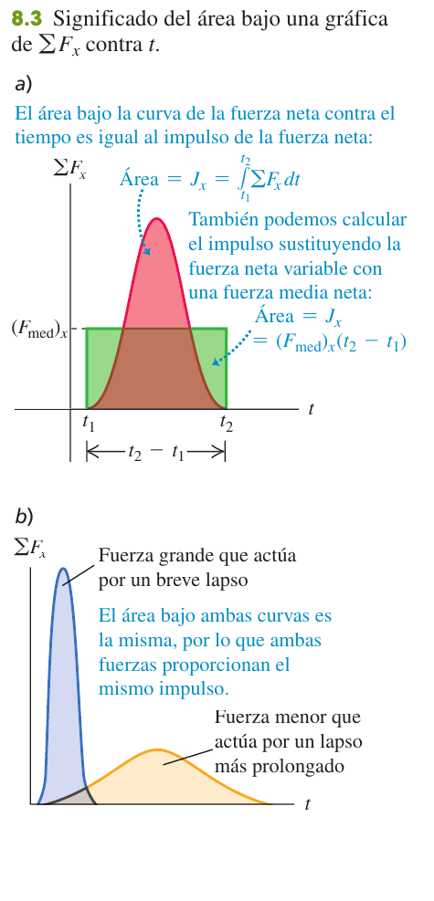
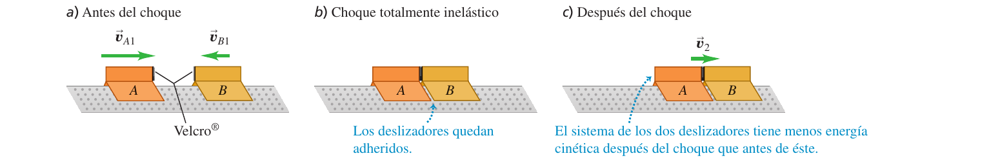
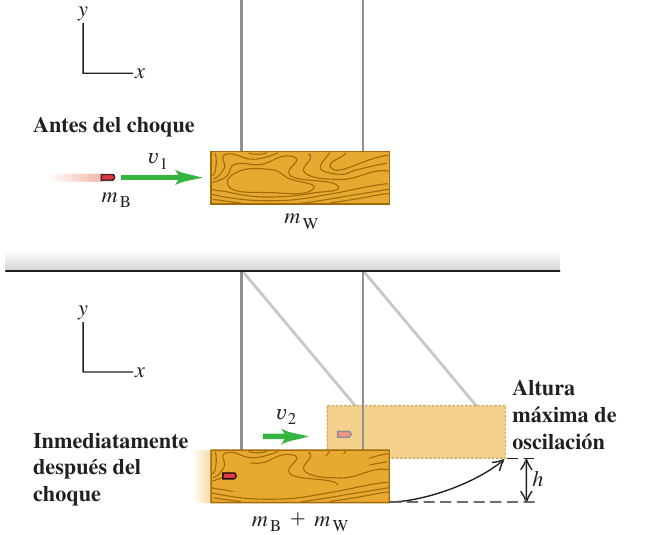
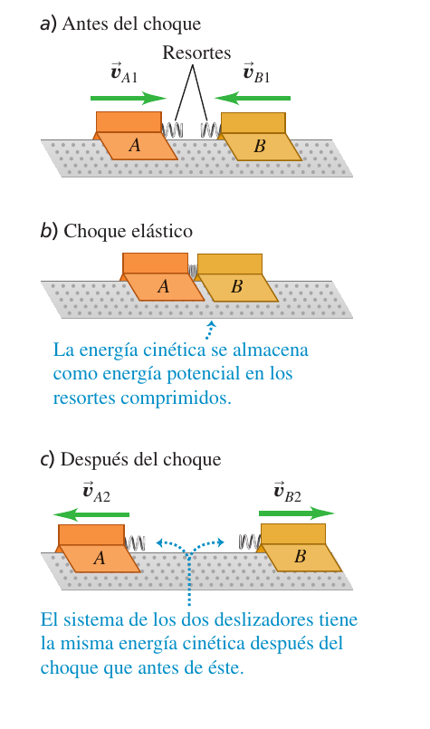
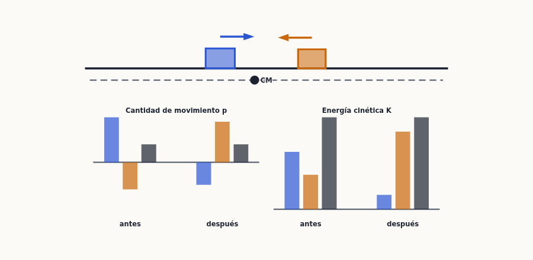
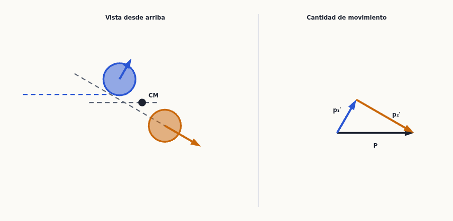
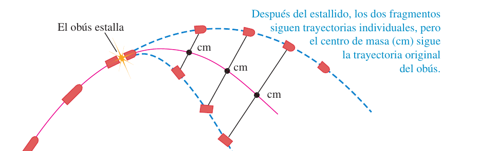
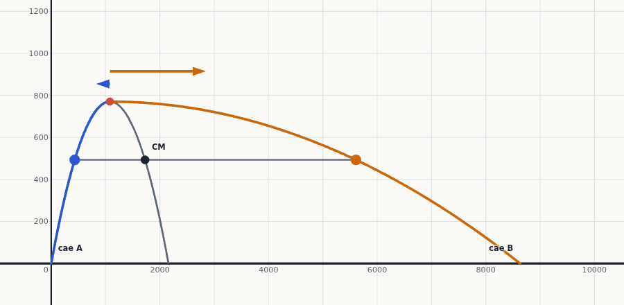
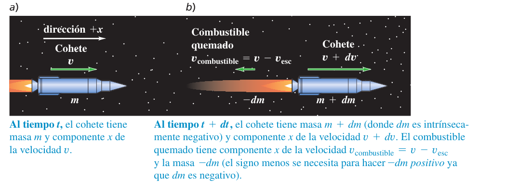

Cantidad de movimiento, impulso y colisiones
Hasta ahora has resuelto el movimiento con fuerzas (tema 5) o con energía (temas 6 y 7). Aquí aparece la tercera herramienta, la más útil cuando dos cuerpos interactúan de golpe: la cantidad de movimiento. Sirve para saber qué ocurre tras un choque o una explosión sin conocer las fuerzas, para entender por qué el centro de masa «ignora» las fuerzas internas y para ver cómo funciona un cohete.
El tema en 5 minutos P
Una sola idea: cuando dos cuerpos interactúan de golpe (un choque, una explosión, un empujón), se hacen fuerzas iguales y opuestas durante el mismo tiempo. Lo que uno gana de cantidad de movimiento $\vec p=m\vec v$ lo pierde el otro, así que la total $\vec P=\sum m\vec v$ no cambia. Con eso resuelves el «antes» y el «después» sin conocer las fuerzas. La energía cinética, en cambio, solo se conserva si el choque es elástico. Es la tercera herramienta del curso: Newton (T4-T5) para fuerzas y aceleraciones, energía (T6-T7) para alturas y rapideces, y cantidad de movimiento para choques y explosiones.
Necesitas: vectores y componentes (T1), la tercera ley (T4), $K=\tfrac12mv^2$ y la conservación de la energía con alturas y resortes (T6-T7), y el tiro horizontal (T3) para los fragmentos de una explosión. Dos problemas de examen tocan temas posteriores: el periodo $T=2\pi\sqrt{m/k}$ (T14) en X3 y el momento angular (T10) en X9. Si el enunciado no da $g$, usa $9{,}8\ \text{m/s}^2$.
El método en 5 pasos (úsalo siempre, en este orden)
Es la «Estrategia para resolver problemas 8.1» del libro más la regla de los choques. U p.244, 248
Las 6 fórmulas que hay que saber
| Fórmula | Cuándo se usa |
|---|---|
| $\vec J=\vec F_{med}\,\Delta t=\Delta\vec p$ | «Fuerza media», «tiempo de contacto», «rebota o se queda pegada». |
| $\sum m\vec v$ antes $=\sum m\vec v$ después | Todo choque, explosión o empujón con fuerzas externas nulas o despreciables. Por componentes. |
| $m_A\vec v_{A1}+m_B\vec v_{B1}=(m_A+m_B)\vec v_2$ | «Quedan unidos», «se incrusta», «queda pegada»: choque totalmente inelástico. |
| $v_{B2x}-v_{A2x}=-(v_{B1x}-v_{A1x})$ | «Choque elástico» en línea recta, junto con $P$ (sistema lineal). |
| $\vec r_{cm}=\dfrac{\sum m_i\vec r_i}{M}$, $\ \sum\vec F_{ext}=M\vec a_{cm}$ | Centro de masa: canoa, explosión en vuelo, teoría «centro de masa y su movimiento». |
| $M\dfrac{dv}{dt}=F_{empuje}-Mg$, $\ F=-v_{esc}\dfrac{dm}{dt}$ | Cohete. Sin gravedad y con $v_{esc}$ constante, $v-v_0=v_{esc}\ln\dfrac{m_0}{m}$. |
Qué cae en examen
Hay 9 preguntas de examen real de este tema: 5 problemas de 3 puntos (choque helio-oxígeno en el plano, X1; cohete de fuegos artificiales que estalla, X2; masa que cae sobre una bandeja con resorte, X3; cohete con empuje y gravedad variable, X4; varilla con pivote golpeada por una bala, X9, compartida con el tema 10) y 4 de teoría y cuestiones («Centro de masa… Conservación del momento lineal», X5; «Choques elásticos», X6; «Conservación del momento lineal» con dos cuestiones, X7; ¿se conserva el momento lineal de un patinador en el aire?, X8). Además, la fuerza media $\Delta p/\Delta t$ aparece como apartado en problemas de otros temas. X ×9
Elige tu ruta
Esta página + lo marcado 🔴 imprescindible (secciones 1-5) + ejercicios del bloque «Núcleo».
Todo lo anterior + 🟡 conveniente (cohete, choques en el plano) + bloque «Práctica» + las preguntas de teoría.
Chuleta, errores frecuentes, lista de comprobación y los 9 de examen sin mirar la solución.
¿?¿Qué tipo de problema es? 🔴 P
Lee el enunciado, busca la pista en la primera columna y ve directo al método y al ejercicio modelo.
| Si el enunciado dice… | Haz esto | Ejercicio modelo |
|---|---|---|
| Choque en el plano: «sale en la dirección $y$», «a 24° del norte» | Una ecuación de $P$ por componente; la energía solo para ver cuánta se pierde. | X1, E4 |
| «quedan unidos», «se incrusta», «queda pegada» | Una sola velocidad final: $m_A\vec v_{A1}+m_B\vec v_{B1}=(m_A+m_B)\vec v_2$. | X3, E4 |
| «choque elástico» frontal | $P$ + velocidad relativa invertida (sistema lineal); con B en reposo, (8.24)-(8.25). | E1 |
| «estalla», «explota», «se divide» (en reposo o en el punto más alto) | $\vec P$ antes $=\vec P$ después; con la energía liberada se cierra el sistema; después, cada fragmento es un proyectil. | X2, E7, E9 |
| Choca y luego «comprime un resorte», «sube», «oscila» | Dos etapas: $P$ en el choque, energía (o MAS) después. Nunca energía a través del choque. | X3, E3, E2 |
| «camina sobre una canoa», «tiran de una cuerda» desde el reposo | El centro de masa no se mueve: $\sum m_i\Delta x_i=0$ respecto al agua o al suelo. | E6 |
| «fuerza media», «tiempo de contacto», «rebotan o se aplastan» | $\vec F_{med}=\Delta\vec p/\Delta t$, restando vectores. | X7 |
| «cohete», «fuerza impulsora», «combustible», «empuje» | $M\,dv/dt=F-Mg$ e integrar; sin gravedad, $v-v_0=v_{esc}\ln(m_0/m)$. | X4, E5 |
| «pivote», «eje fijo», «varilla golpeada», «¿se conserva el momento lineal?» | El eje (o el peso) es fuerza externa: $P$ no se conserva; sí el momento angular respecto al eje (T10). | X9, X8 |
| «Desarrolle el tema…» | Guion: idea → definición y ecuación → demostración breve → condición de conservación → ejemplo con números. | X5, X6, X7 |
1Cantidad de movimiento e impulso 🔴 U p.238
🎯 Antes de leer: es más fácil atrapar una pelota rápida si dejas que la mano ceda hacia atrás mientras la frenas. ¿Por qué? (Pista: el cambio de cantidad de movimiento es el mismo.) (Piénsalo 20 s; la respuesta está en esta sección.)
¿Qué cuesta más parar con la mano: una pelota de ping-pong o una bola de bolos a la misma rapidez? La bola: tiene más masa. ¿Y una bola lenta frente a otra rápida? Cuenta también la rapidez. La cantidad de movimiento (o «momento lineal») mide «cuánto movimiento lleva» un cuerpo, y apunta hacia donde va:
$$\vec p=m\vec v\ \ (8.2)\qquad p_x=mv_x,\ \ p_y=mv_y\ \ (8.3)\qquad\sum\vec F=\frac{d\vec p}{dt}\ \ (8.4)$$Unidad: kg·m/s. La segunda ley tal como la escribió Newton: la fuerza neta es lo rápido que cambia $\vec p$ (con masa constante, $\sum\vec F=m\vec a$); solo vale en sistemas inerciales. Ejemplo mínimo. Dos coches de 1000 kg a 20 m/s, uno al norte y otro al este: los dos tienen $p=2{,}0\times10^4$ kg·m/s, pero sus vectores son distintos y la suma mide $2{,}8\times10^4$ kg·m/s, no $4{,}0\times10^4$. Error típico: tratar $p$ como un número; es un vector y cada componente lleva su signo.
U p.238Un empujón largo y suave cambia el movimiento lo mismo que uno corto y brutal: cuenta la fuerza por el tiempo que actúa. Eso es el impulso, y el teorema impulso-cantidad de movimiento dice que es justo el cambio de $\vec p$:
$$\vec J=\int_{t_1}^{t_2}\sum\vec F\,dt=\vec F_{med}\,\Delta t\ \ (8.7,\ 8.8)\qquad\vec J=\vec p_2-\vec p_1=\Delta\vec p\ \ (8.6)$$Unidad: N·s = kg·m/s. Con fuerza constante, $\vec J=\sum\vec F\,\Delta t$ (8.5); en una gráfica $F_x$–$t$, $J_x$ es el área bajo la curva. Por eso doblas las rodillas al aterrizar o existen las bolsas de aire: más $\Delta t$, menos fuerza para el mismo $\Delta p$. Ejemplo mínimo (ejemplo 8.2). Pelota de 0,40 kg que llega a 30 m/s hacia la izquierda y rebota a 20 m/s hacia la derecha; con $+x$ a la derecha, $J_x=(0{,}40)(20)-(0{,}40)(-30)=20$ N·s. Si el contacto dura 0,010 s, $F_{med}=2000$ N, unas 500 veces su peso (3,9 N): durante un choque las demás fuerzas no cuentan. Error típico: olvidar el signo de $p_{1x}=-12$ kg·m/s; saldría $J_x=8-12=-4$ N·s, ¡como si la pared tirase de la pelota!
U p.239-242
$\Delta\vec p$ se calcula componente a componente. Ejemplo 8.3. Un balón de 0,40 kg va a 20 m/s hacia la izquierda y, tras la patada, sale a 30 m/s a 45° hacia arriba y a la derecha ($v_{2x}=v_{2y}=21{,}2$ m/s). Entonces $J_x=0{,}40\,(21{,}2+20)=16{,}5$ N·s y $J_y=0{,}40\,(21{,}2)=8{,}5$ N·s; con 0,010 s de contacto, $F_{med}=\sqrt{1650^2+850^2}=1{,}9\times10^3$ N a $27^\circ$ sobre la horizontal. La fuerza no apunta como la velocidad final, porque el balón ya se movía antes.
U p.241-242$\vec J=\Delta\vec p$ cuenta fuerza × tiempo; $W=\Delta K$ (tema 6) cuenta fuerza × distancia. Se relacionan por $K=\dfrac{p^2}{2m}$. Dos pelotas, de 0,50 kg a 4,0 m/s y de 0,10 kg a 20 m/s, tienen el mismo $p=2{,}0$ kg·m/s (necesitan el mismo impulso para pararlas), pero $K=4{,}0$ J y 20 J: parar la rápida exige cinco veces más trabajo. Ejemplo conceptual 8.1. Dos veleros de masas $m$ y $2m$, empujados desde el reposo por la misma fuerza a lo largo de la misma distancia, llegan con la misma $K$ (mismo trabajo); pero el pesado tarda más, recibe más impulso y lleva $\sqrt2$ veces más cantidad de movimiento.
U p.240-241Casi nunca conoces la fuerza durante un choque, pero sí las velocidades antes y después. Calcula $\Delta\vec p$ (restando vectores) y divide entre $\Delta t$: $\vec F_{med}=\Delta\vec p/\Delta t$. Así se razona, por ejemplo, que una bala que rebota ejerce más fuerza media sobre una placa que una que se aplasta (ejercicio X7). También se usa en los problemas de frenado por penetración: el satélite que se estrella (Feb 2023 1ª sem. P-1, apartado c) y la bala que se incrusta en un material antibalas (Feb 2024 1ª sem. P-1, apartado c) se resuelven con $\Delta p=F_{med}\Delta t$.
U p.239 X✍️ Comprueba que lo has entendido (2 min)
- Una pelota de tenis de 0,060 kg llega a 40 m/s y sale rebotada en sentido contrario a 30 m/s. ¿Impulso que recibe? ¿Fuerza media si el contacto dura 4,0 ms?
Ver respuesta
Con $+x$ hacia donde sale: $J_x=0{,}060\,(30)-0{,}060\,(-40)=4{,}2$ N·s y $F_{med}=4{,}2/0{,}0040=1050$ N. Si sumas mal los signos ($0{,}060\cdot(30-40)$) te sale un impulso diez veces menor y del sentido equivocado. - Un coche de 1200 kg a 20 m/s frena hasta pararse en 8,0 s. ¿Fuerza media de frenado?
Ver respuesta
$F_{med}=\Delta p/\Delta t=(0-1200\cdot20)/8{,}0=-3000$ N: 3000 N en sentido contrario al movimiento. - Dos cuerpos de 1,0 kg y 4,0 kg tienen la misma energía cinética, 50 J. ¿Cuál lleva más cantidad de movimiento?
Ver respuesta
$p=\sqrt{2mK}$: 10 kg·m/s el de 1,0 kg y 20 kg·m/s el de 4,0 kg. Con la misma $K$, el más pesado lleva más $p$ (como los veleros).
2Conservación de la cantidad de movimiento 🔴 U p.243
🎯 Antes de leer: dos patinadores en reposo sobre hielo se empujan. ¿Cambia la cantidad de movimiento total del par? ¿Y la de cada uno? (Piénsalo 20 s; la respuesta está en esta sección.)
Dos patinadores se empujan: por la tercera ley cada uno recibe una fuerza igual y opuesta durante el mismo tiempo, así que sus impulsos son opuestos y lo que gana uno lo pierde el otro. Las fuerzas entre partes del sistema son internas; las que vienen de fuera, externas. Con $\vec P=m_A\vec v_A+m_B\vec v_B+\dots$ (8.14), las internas se anulan por pares:
$$\frac{d\vec P}{dt}=\sum\vec F_{ext}\ \ (8.13)\qquad\Longrightarrow\qquad\sum\vec F_{ext}=0\ \Rightarrow\ \vec P=\text{cte, cada componente por separado (8.15)}$$Vale aunque las fuerzas internas no sean conservativas (choques inelásticos, explosiones): por eso llega donde no llega la energía mecánica. Ejemplo mínimo (ejemplo 8.4). Un rifle de 3,00 kg dispara una bala de 5,00 g a 300 m/s: $0=m_Bv_{Bx}+m_Rv_{Rx}\Rightarrow v_{Rx}=-0{,}500$ m/s. Cantidades de movimiento iguales y opuestas ($\pm1{,}50$ kg·m/s), pero $K_B=225$ J frente a $K_R=0{,}375$ J: la bala recorre más distancia durante el empujón. Error típico: creer que hace falta que no haya ninguna fuerza externa; basta que su suma sea nula (peso y normal se anulan) o, durante un choque breve, despreciable.
U p.243-245$\vec P$ se calcula con una suma vectorial. Dos cantidades de movimiento de 18 y 24 kg·m/s en direcciones perpendiculares suman 30 kg·m/s (no 42). Lo más seguro es trabajar con componentes: $P_x=p_{Ax}+p_{Bx}+\dots$ y $P_y=p_{Ay}+p_{By}+\dots$ Según «Los datos hablan», más del 29 % de los estudiantes falla un problema de conservación de la cantidad de movimiento, sobre todo por olvidar que es un vector o por sumar módulos.
U p.244, 251✍️ Comprueba que lo has entendido (2 min)
- Un patinador de 60 kg y una patinadora de 40 kg, en reposo sobre hielo, se empujan. Ella sale a 3,0 m/s. ¿Y él?
Ver respuesta
$0=40(3{,}0)+60\,v\Rightarrow v=-2{,}0$ m/s: 2,0 m/s en sentido contrario. - Un cañón de 800 kg, libre de deslizar, dispara horizontalmente un proyectil de 10 kg a 400 m/s. ¿Rapidez de retroceso?
Ver respuesta
$v=10\cdot400/800=5{,}0$ m/s hacia atrás. - Una bola A de 2,0 kg a 3,0 m/s según $+x$ choca con una bola B de 1,0 kg en reposo; después, A se mueve a 1,0 m/s según $+y$. ¿Velocidad de B?
Ver respuesta
$x$: $2{,}0\cdot3{,}0=1{,}0\,v_{Bx}\Rightarrow v_{Bx}=6{,}0$ m/s. $y$: $0=2{,}0\cdot1{,}0+1{,}0\,v_{By}\Rightarrow v_{By}=-2{,}0$ m/s. Módulo $\sqrt{40}=6{,}32$ m/s, a $18{,}4^\circ$ por debajo de $+x$ (método de X1).
3Tipos de choque y choque totalmente inelástico 🔴 U p.247
🎯 Antes de leer: dos coches idénticos chocan de frente a la misma rapidez y quedan unidos. ¿Cuánta energía cinética queda después y adónde ha ido? (Piénsalo 20 s; la respuesta está en esta sección.)
En física, un choque es cualquier interacción intensa y breve. Las fuerzas internas son tan grandes que, durante el choque, la fricción, el peso o un resorte aún sin comprimir no cuentan: $\vec P$ se conserva siempre. Lo que distingue un choque de otro es la energía cinética:
| Tipo | Energía cinética | Ejemplo |
|---|---|---|
| Elástico | $K_2=K_1$ (fuerzas de interacción conservativas) | bolas de billar, deslizadores con resorte |
| Inelástico | $K_2\lt K_1$ | coches que se abollan y rebotan |
| Totalmente inelástico | $K_2\lt K_1$ y quedan unidos con la misma velocidad | bala que se incrusta, Velcro |
| Explosión | $K_2\gt K_1$: se libera energía interna | fuegos artificiales, obús |
Regla general: en cualquier choque en que se puedan ignorar las fuerzas externas se conserva la cantidad de movimiento; solo en los elásticos se conserva además la energía cinética. Error típico: leer «inelástico» como «quedan pegados»: solo significa que se pierde energía cinética.
U p.247-250
Como los dos cuerpos acaban con la misma $\vec v_2$, queda una incógnita por componente:
$$m_A\vec v_{A1}+m_B\vec v_{B1}=(m_A+m_B)\,\vec v_2\qquad\text{(ec. 8.16)}$$Con B en reposo, $v_{2x}=\dfrac{m_A}{m_A+m_B}v_{A1x}$ y $\dfrac{K_2}{K_1}=\dfrac{m_A}{m_A+m_B}\lt1$ (8.17, 8.18): siempre se pierde energía (no hace falta memorizarlas). Ejemplo mínimo (ejemplo 8.7). Los mismos deslizadores ($m_A=0{,}50$ kg a $+2{,}0$ m/s y $m_B=0{,}30$ kg a $-2{,}0$ m/s) con Velcro: $v_{2x}=\dfrac{0{,}40}{0{,}80}=0{,}50$ m/s; $K$ pasa de 1,6 J a 0,10 J: queda 1/16, el resto calienta y deforma. Error típico: imponer $K_1=K_2$ cuando los cuerpos quedan unidos.
U p.248-249Si tras el choque el conjunto sube, comprime un resorte u oscila, corta el problema en el instante del choque:
- Choque (instantáneo; las cuerdas siguen verticales): se conserva $P_x$, no la energía mecánica (la bala astilla y calienta la madera).
- Después: se conserva la energía mecánica (trabaja el peso; la tensión no trabaja), no $P$ (las cuerdas inclinadas tiran en horizontal).
Ejemplo 8.8. Una bala de masa $m_B$ se incrusta en un bloque $m_W$ colgado, que sube una altura $h$: $v_2=\sqrt{2gh}$ y $v_1=\dfrac{m_B+m_W}{m_B}\sqrt{2gh}$. Con 5,00 g, 2,00 kg y 3,00 cm: $v_2=0{,}767$ m/s y $v_1=307$ m/s. La bala tenía 236 J y el conjunto, justo después, solo 0,589 J. Mismo método en E3, E2 y X3. Error típico: igualar $\tfrac12m_Bv_1^2$ a $(m_B+m_W)gh$, es decir, usar la energía a través del choque.
U p.249
✍️ Comprueba que lo has entendido (2 min)
- Un vagón de 2000 kg a 3,0 m/s alcanza a otro de 1000 kg que va a 1,5 m/s en el mismo sentido, y quedan enganchados. ¿Velocidad final? ¿Energía cinética perdida?
Ver respuesta
$V=(2000\cdot3{,}0+1000\cdot1{,}5)/3000=2{,}5$ m/s. $K$: de $10\,125$ J a 9375 J; se pierden 750 J. - Una bala de 10 g a 400 m/s se incrusta en un bloque de 1,99 kg en reposo sobre hielo. ¿Velocidad del conjunto? ¿Qué fracción de la energía cinética queda?
Ver respuesta
$V=0{,}010\cdot400/2{,}00=2{,}0$ m/s; $K_2/K_1=m_B/(m_B+m_W)=0{,}005$: queda el 0,5 %. - En un péndulo balístico, una bala de 10 g se incrusta en un bloque de 2,0 kg que sube 5,0 cm. ¿Rapidez de la bala? ($g=9{,}8$)
Ver respuesta
Después: $v_2=\sqrt{2gh}=0{,}990$ m/s. Choque: $v_1=\dfrac{2{,}010}{0{,}010}(0{,}990)=199$ m/s.
4Choques elásticos 🔴 U p.251
🎯 Antes de leer: una bola golpea de frente, en una mesa sin fricción, a otra idéntica en reposo, con un choque elástico. ¿Qué le pasa a cada una? (Piénsalo 20 s; la respuesta está en esta sección.)
Dos deslizadores con un resorte en el parachoques: el resorte guarda un instante la energía cinética y la devuelve entera. Ahora hay dos leyes ($P$ y $K$), y por eso salen las dos velocidades finales. Con $v_{B1x}=0$:
$$m_Av_{A1x}=m_Av_{A2x}+m_Bv_{B2x}\ \ (8.20)\qquad\tfrac12m_Av_{A1x}^2=\tfrac12m_Av_{A2x}^2+\tfrac12m_Bv_{B2x}^2\ \ (8.19)$$Agrupando los términos de A y dividiendo una ecuación entre la otra ($a^2-b^2=(a+b)(a-b)$) sale $v_{B2x}=v_{A1x}+v_{A2x}$ (8.23), y de ahí
$$v_{A2x}=\frac{m_A-m_B}{m_A+m_B}\,v_{A1x}\ \ (8.24)\qquad v_{B2x}=\frac{2m_A}{m_A+m_B}\,v_{A1x}\ \ (8.25)$$Error típico: usar (8.24)-(8.25) cuando B también se mueve: solo valen con B inicialmente en reposo.
U p.251-253
- $m_A\ll m_B$ (pelota de ping-pong contra bola de bolos): $v_{A2x}\approx-v_{A1x}$ y $v_{B2x}\approx0$; la pequeña rebota y la grande casi no se mueve.
- $m_A=m_B$ (billar): $v_{A2x}=0$ y $v_{B2x}=v_{A1x}$; A se detiene y B sale con toda su cantidad de movimiento y toda su energía (fig. 8.24 de U).
- $m_A\gg m_B$ (bola de bolos contra ping-pong): A casi no cambia y B sale a casi $2v_{A1x}$.
- Ejemplo 8.11 (reactor): un neutrón (1,0 u) choca de frente con un carbono (12 u) en reposo: sale rebotado con $11/13$ de su rapidez y conserva solo $(11/13)^2\approx0{,}72$ de su energía. Los núcleos ligeros frenan mejor los neutrones.
La ecuación (8.23) dice que la velocidad de B respecto a A cambia de signo y conserva su módulo, y eso vale en cualquier choque elástico rectilíneo, aunque los dos se muevan:
$$v_{B2x}-v_{A2x}=-\,(v_{B1x}-v_{A1x})\qquad\text{(ecs. 8.26 y 8.27)}$$Junto con la conservación de $P$ forma un sistema lineal de dos ecuaciones. Ejemplo mínimo (ejemplo 8.10). Dos deslizadores ($m_A=0{,}50$ kg a $+2{,}0$ m/s y $m_B=0{,}30$ kg a $-2{,}0$ m/s) con resortes ideales: $v_{B2x}-v_{A2x}=-(-2{,}0-2{,}0)=4{,}0$ m/s y $0{,}50\,v_{A2x}+0{,}30\,v_{B2x}=0{,}40$ kg·m/s, de donde $v_{A2x}=-1{,}0$ m/s y $v_{B2x}=+3{,}0$ m/s; $K=1{,}6$ J antes y después. Error típico: resolver la ecuación cuadrática de la energía cuando la de la velocidad relativa da lo mismo con menos cuentas.
U p.252-253
Choques elásticos en el plano 🟡

Un solo parámetro para todos los choques ⚪
Para unificar lo anterior en una línea recta se define $e=-\dfrac{v_{B2x}-v_{A2x}}{v_{B1x}-v_{A1x}}$ (A y B son los cuerpos; 1 y 2, antes y después), la razón entre la velocidad de separación y la de acercamiento. Elástico: $e=1$ (la velocidad relativa solo cambia de signo, ec. 8.27). Totalmente inelástico: $e=0$ (quedan con la misma velocidad). Entre medias, $0\lt e\lt1$. Con la cantidad de movimiento resulta $$v_{A2x}=\frac{(m_A-e\,m_B)v_{A1x}+(1+e)m_Bv_{B1x}}{m_A+m_B},\qquad v_{B2x}=\frac{(m_B-e\,m_A)v_{B1x}+(1+e)m_Av_{A1x}}{m_A+m_B}$$ y la pérdida de energía cinética es $\Delta K=-\tfrac12\mu(1-e^2)(v_{A1x}-v_{B1x})^2$ con $\mu=\dfrac{m_Am_B}{m_A+m_B}$. La velocidad del centro de masa, $v_{cm}=P/M$, no depende de $e$. Con $e=1$ se recuperan (8.24)-(8.25) cuando $v_{B1x}=0$.
P✍️ Comprueba que lo has entendido (2 min)
- Un cuerpo de 1,0 kg a 6,0 m/s choca elásticamente de frente con otro de 2,0 kg en reposo. ¿Velocidades finales?
Ver respuesta
(8.24)-(8.25): $v_{A2}=\dfrac{1-2}{3}(6{,}0)=-2{,}0$ m/s (rebota) y $v_{B2}=\dfrac{2}{3}(6{,}0)=4{,}0$ m/s. Comprobación: $K=18$ J antes y $2+16=18$ J después. - A (2,0 kg) va a $+3{,}0$ m/s y B (1,0 kg) a $-3{,}0$ m/s; chocan elásticamente de frente. ¿Velocidades finales?
Ver respuesta
$P$: $2v_{A2}+v_{B2}=3{,}0$; velocidad relativa: $v_{B2}-v_{A2}=6{,}0$. Restando, $3v_{A2}=-3{,}0$: $v_{A2}=-1{,}0$ m/s y $v_{B2}=+5{,}0$ m/s. $K=13{,}5$ J antes y después. - Un neutrón (1 u) choca elásticamente de frente con un deuterón (2 u) en reposo. ¿Qué fracción de su energía cinética pierde?
Ver respuesta
$v_{n2}=\dfrac{1-2}{1+2}v_{n1}=-\tfrac13v_{n1}$: conserva $(1/3)^2=1/9$ de su energía y pierde $8/9$, el 88,9 %. Cuanto más parecidas las masas, más energía transfiere.
5Centro de masa 🔴 U p.254
🎯 Antes de leer: un proyectil estalla en pleno vuelo, sin aire. Mientras los fragmentos caen, ¿qué trayectoria sigue el centro de masa? (Piénsalo 20 s; la respuesta está en esta sección.)
Lanza una llave inglesa girando sobre una mesa lisa: cada punto hace algo complicado, pero hay un punto que avanza en línea recta a velocidad constante. Es el centro de masa:
$$x_{cm}=\frac{\sum m_ix_i}{\sum m_i},\quad y_{cm}=\frac{\sum m_iy_i}{\sum m_i}\ \ (8.28)\qquad\vec r_{cm}=\frac{\sum m_i\vec r_i}{\sum m_i}\ \ (8.29)$$Es un promedio pesado: se acerca a la masa mayor. En un cuerpo homogéneo con centro geométrico está en él; si hay un eje de simetría, está sobre el eje; y puede quedar fuera del material (una rosquilla lo tiene en el agujero). Ejemplo mínimo (ejemplo 8.13). Molécula de agua: O (16,0 u) en el origen y dos H (1,0 u) a $d=9{,}57\times10^{-11}$ m, con 105° entre enlaces y simétricos respecto a $x$: $x_{cm}=\dfrac{2(1{,}0)\,d\cos52{,}5^\circ}{18{,}0}=0{,}068\,d=6{,}5\times10^{-12}$ m e $y_{cm}=0$, muy cerca del oxígeno. Error típico: dividir entre el número de partículas en lugar de entre la masa total.
U p.254-255Derivando $\vec r_{cm}$ se obtiene $\vec v_{cm}=\dfrac{\sum m_i\vec v_i}{M}$ (ecs. 8.30-8.31), es decir, $$M\vec v_{cm}=\sum m_i\vec v_i=\vec P\qquad\text{(ec. 8.32)}$$ La cantidad de movimiento total es la masa total por la velocidad del centro de masa. Derivando otra vez y usando que las fuerzas internas se cancelan por pares, $$\sum\vec F_{ext}=M\vec a_{cm}\ \ (8.34),\qquad\sum\vec F_{ext}=\frac{d\vec P}{dt}\ \ (8.36)$$ El centro de masa se mueve como si toda la masa estuviera concentrada en él y sobre él actuara la suma de las fuerzas externas. Si $\sum\vec F_{ext}=0$, $\vec v_{cm}$ es constante y $\vec P$ se conserva. Las fuerzas internas (un tirón de tu cinturón, una explosión) no cambian el movimiento del centro de masa.
U p.255-258

El centro de masa no se mueve, así que $\sum m_i\,\Delta x_i=0$, con los desplazamientos medidos respecto a un punto fijo (el suelo, el agua), nunca respecto a un cuerpo que también se mueve. Ejemplo 8.14. Jaime (90 kg) y Ramón (60 kg) tiran de una cuerda sobre hielo sin fricción: cuando Jaime ha avanzado 6,0 m, Ramón ha avanzado $\dfrac{90\cdot6{,}0}{60}=9{,}0$ m. Las distancias van en razón inversa a las masas, tiren con la fuerza que tiren. Mismo método: la canoa de E6.
U p.256No. Mientras ambos fragmentos están en el aire, las únicas fuerzas externas son los pesos y el centro de masa sigue la parábola. En cuanto uno toca el suelo aparece una fuerza externa nueva (la del suelo sobre ese fragmento) y la trayectoria del centro de masa cambia. En los problemas 8.97 y 8.98 los dos caen a la vez, por eso la propiedad vale hasta el final.
U p.258✍️ Comprueba que lo has entendido (2 min)
- Una masa de 2,0 kg está en $x=0$ y otra de 3,0 kg en $x=5{,}0$ m. ¿Dónde está el centro de masa?
Ver respuesta
$x_{cm}=\dfrac{2{,}0\cdot0+3{,}0\cdot5{,}0}{5{,}0}=3{,}0$ m, más cerca de la masa mayor. - Tres partículas: 1,0 kg en (0, 0), 1,0 kg en (4,0; 0) m y 2,0 kg en (0; 2,0) m. ¿Centro de masa?
Ver respuesta
$x_{cm}=\dfrac{1{,}0\cdot4{,}0}{4{,}0}=1{,}0$ m e $y_{cm}=\dfrac{2{,}0\cdot2{,}0}{4{,}0}=1{,}0$ m. - Un hombre de 80 kg camina 5,0 m (medidos sobre la balsa) por una balsa de 120 kg que flota en reposo. Sin rozamiento con el agua, ¿cuánto se mueve la balsa?
Ver respuesta
Si la balsa retrocede $d$, él avanza $5{,}0-d$ respecto al agua: $80(5{,}0-d)=120\,d\Rightarrow d=2{,}0$ m. Él avanza 3,0 m respecto al agua.
6Propulsión de un cohete 🟡 U p.258
🎯 Antes de leer: un cohete en el espacio vacío no tiene nada contra lo que empujar. ¿Cómo se acelera? (Piénsalo 20 s; la respuesta está en esta sección.)
Un globo que sueltas sin atar sale disparado: expulsa aire hacia atrás y el aire lo empuja hacia delante. El cohete hace lo mismo y no necesita «apoyarse» en nada (por eso funciona en el vacío). Como su masa cambia, no se usa $\sum\vec F=m\vec a$ directamente, sino la conservación de $P$ del cohete más el gas expulsado. Con $v_{esc}$ la rapidez del gas relativa al cohete y $dm\lt0$:
$$m\,dv=-v_{esc}\,dm\ \ (8.37)\qquad F=-v_{esc}\frac{dm}{dt}\ \ (8.38)\qquad a=-\frac{v_{esc}}{m}\frac{dm}{dt}\ \ (8.39)\qquad v-v_0=v_{esc}\ln\frac{m_0}{m}\ \ (8.40)$$(8.40) supone $v_{esc}$ constante y ninguna otra fuerza. Partiendo del reposo, $v$ supera $v_{esc}$ si $m_0/m\gt e=2{,}718$: casi toda la masa inicial tiene que ser combustible. Ejemplos 8.15 y 8.16. Un cohete que en el primer segundo expulsa $1/120$ de su masa a $v_{esc}=2400$ m/s arranca con $a=2400/120=20$ m/s², sea cual sea su masa; si quema 3/4 de su masa, llega a $v=2400\ln4=3327$ m/s.
U p.258-260
(8.40) vale en el espacio. Si el cohete despega de un planeta hay que añadir el peso: $m\,\dfrac{dv}{dt}=F-mg$ (ejercicio X4). Recuerda que $dm/dt$ es negativo, que $m$ es la masa instantánea (la del cohete con el combustible que aún lleva) y que $v_{esc}$ es relativa al cohete, no al suelo.
U p.259-260✍️ Comprueba que lo has entendido (2 min)
- Un cohete expulsa 5,0 kg de gas por segundo a 2000 m/s respecto a él. ¿Empuje? ¿Aceleración en el espacio cuando su masa es de 500 kg?
Ver respuesta
$F=-v_{esc}\,dm/dt=2000\cdot5{,}0=1{,}0\times10^4$ N; $a=F/m=20$ m/s². - Ese mismo cohete despega en vertical desde la Tierra con 500 kg. ¿Aceleración inicial?
Ver respuesta
$m\,a=F-mg\Rightarrow a=20-9{,}8=10{,}2$ m/s². Olvidar el peso es el error típico (método de X4). - En el espacio, un cohete parte del reposo con $v_{esc}=2500$ m/s y quema combustible hasta que su masa es un tercio de la inicial. ¿Rapidez final?
Ver respuesta
$v=2500\ln3=2747$ m/s, mayor que $v_{esc}$ porque $m_0/m=3\gt e$.
7Ejercicios resueltos
Las 9 preguntas de examen real (X1-X9) están todas aquí, completas: los cinco problemas en el «Núcleo» y las cuatro de teoría y cuestiones en su propio bloque. Las acompañan tres ejercicios del solucionario con métodos que el examen todavía no ha pedido pero que el libro trabaja mucho (choque elástico con los dos cuerpos en movimiento, bala que se incrusta y comprime un resorte, y canoa). Ordenados por método, no por fuente. Intenta resolver tú antes de abrir la solución. Cada ejercicio termina con su receta.
| Ejercicio | Qué tipo es | Método que te llevas |
|---|---|---|
| X1 · Feb 2018 | Choque en el plano: uno sale en otra dirección | Una ecuación de $P$ por componente; $K$ solo para medir lo perdido |
| X2 · Feb 2020 | Explosión en el punto más alto | $m_Av_A=m_Bv_B$ + energía liberada; después, cada fragmento es un proyectil |
| X3 · Feb 2022 | Cae, choca (queda pegada) y oscila | Energía → $P$ en el choque → energía o MAS respecto al nuevo equilibrio |
| X4 · Feb 2019 | Cohete con empuje dado y gravedad variable | $M\,dv/dt=F-Mg$; integrar por tramos empalmando $v$ e $y$ |
| X9 · Sep 2019 | Bala que se incrusta en una varilla con pivote | Se conserva $L$ respecto al pivote, no $P$; $K_2=L^2/2I$ |
| E1 | Choque elástico frontal con los dos en movimiento | $P$ + velocidad relativa invertida: sistema lineal 2×2 |
| E3 | Bala que se incrusta y comprime un resorte (o sube: péndulo balístico) | Hacia atrás: energía después del choque da $V$; $P$ en el choque da $v_1$ |
| E6 | Persona que camina sobre una canoa | CM fijo: $\sum m_i\Delta x_i=0$ respecto al agua |
X1 — Choque de un átomo de helio con una molécula de oxígeno en reposo X 🔴 examen real U p.243-244, 247
Un átomo de helio de masa $m_1=4$ u choca con una velocidad de 1200 m/s, en la dirección del eje $x$, con una molécula de oxígeno de masa $m_2=32$ u que se encuentra inicialmente en reposo. Como consecuencia del choque, el helio se mueve en la dirección del eje $y$, en sentido positivo, con una cuarta parte de la energía cinética que tenía antes del choque. Calcular: a) la velocidad que adquiere la molécula de oxígeno; b) la fracción de energía cinética total que se pierde en el choque. (3 puntos.)
Inténtalo primero; abre una pista solo si te atascas.
Pista 1
Sistema {He + O₂}: solo fuerzas internas, luego se conserva $\vec P$ por componentes. ¿Qué rapidez tiene el helio si su $K$ se reduce a la cuarta parte?
Pista 2
Una ecuación por componente ($x$ e $y$) para $\vec v_2'$; la energía se usa después, solo para ver cuánto se perdió.
Solución completa
- Sistema y ley. El sistema es {He + O₂}. Durante el choque solo actúan fuerzas internas (acción-reacción), así que se conserva la cantidad de movimiento total vectorial, componente a componente. La energía cinética no tiene por qué conservarse: no dicen que el choque sea elástico (de hecho el apartado b pide cuánto se pierde).
- Velocidad final del helio. Si $K_1'=K_1/4$, entonces $v_1'^2=v_1^2/4$ y $v_1'=v_1/2=600$ m/s, dirigida según $+y$: $\vec v_1'=(0,\ 600)$ m/s. (Un cuarto de energía es la mitad de rapidez, no un cuarto.)
- Unidades. Solo intervienen cocientes de masas: puedes dejar las masas en u sin pasar a kg.
- Componente $x$: $m_1v_1=0+m_2v_{2x}'\Rightarrow v_{2x}'=\dfrac{4\cdot1200}{32}=150$ m/s.
- Componente $y$: antes no había cantidad de movimiento en $y$: $0=m_1(600)+m_2v_{2y}'\Rightarrow v_{2y}'=-\dfrac{4\cdot600}{32}=-75$ m/s.
- Módulo y dirección: $\vec v_2'=(150\,\hat\imath-75\,\hat\jmath)$ m/s, $|\vec v_2'|=\sqrt{150^2+75^2}=167{,}7\approx168$ m/s, formando $\arctan(75/150)=26{,}6^\circ$ por debajo del eje $+x$: el O₂ «compensa» la cantidad de movimiento del helio hacia $+y$ yéndose hacia $-y$.
- Energías (en u·m²/s²): $K_0=\tfrac12(4)(1200)^2=2{,}88\times10^6$; después, $K_1'=K_0/4=0{,}72\times10^6$ y $K_2'=\tfrac12(32)(150^2+75^2)=0{,}45\times10^6$; total final $1{,}17\times10^6$.
- Fracción perdida: $\dfrac{K_0-K_f}{K_0}=\dfrac{2{,}88-1{,}17}{2{,}88}=\dfrac{19}{32}=0{,}594$: se pierde el 59,4 % (choque inelástico). En julios, con 1 u $=1{,}66\times10^{-27}$ kg: $K_0=4{,}78\times10^{-21}$ J y se pierden $2{,}84\times10^{-21}$ J.
Resultado: a) $\vec v_2'=(150\,\hat\imath-75\,\hat\jmath)$ m/s (168 m/s a 26,6° bajo el eje $x$); b) $19/32\approx59\ \%$.
Reparto orientativo (el enunciado solo fija 3 puntos): a) velocidad del O₂ (1,8) · b) fracción de energía perdida (1,2). Dentro de cada apartado suele valorarse en este orden:
- Planteamiento (≈30 %): esquema antes/después con ejes, cálculo de $v_1'=v_1/2$ y qué se conserva (solo $\vec P$).
- Ecuaciones (≈40 %): una ecuación de conservación por componente y $\Delta K/K_0$.
- Resultado y unidades (≈30 %): $\vec v_2'=(150,-75)$ m/s (168 m/s) y 59 % de energía perdida, con unidades.
Un resultado numérico sin planteamiento rara vez puntúa; un planteamiento correcto con un fallo de cuentas sí suele puntuar la mayor parte.
X2 — Cohete de fuegos artificiales que estalla en dos fragmentos (= problema 8.97 de U) X 🔴 examen real U p.243-244, 248
Un cohete de fuegos artificiales se dispara verticalmente hacia arriba. En su altura máxima de 80 m estalla y se divide en dos fragmentos, uno con masa de 1,40 kg y otro con masa de 0,28 kg. En la explosión, 860 J de energía química se convierten en energía cinética de los dos fragmentos. a) ¿Qué velocidad tiene cada fragmento inmediatamente después de la explosión? b) Se observa que los dos fragmentos caen al suelo al mismo tiempo. ¿Qué distancia hay entre los puntos en los que caen? Suponga que el suelo es horizontal y que la resistencia del aire es despreciable. (3 puntos.) = E 8.97
Inténtalo primero; abre una pista solo si te atascas.
Pista 1
En el punto más alto $\vec P=0$: las cantidades de movimiento de los fragmentos son iguales y opuestas, $m_Av_A=m_Bv_B$.
Pista 2
Con $\tfrac12m_Av_A^2+\tfrac12m_Bv_B^2=860$ J salen las dos rapideces; luego cada fragmento es un proyectil con $v_{0y}=0$ y el mismo tiempo de caída.
Solución completa
- Estado justo antes. En el punto más alto de un tiro vertical la velocidad es cero: $\vec P=0$ y $K=0$.
- Por qué se conserva $\vec P$. Las fuerzas de la explosión son internas y enormes; el peso es externo y finito, y su impulso $m\vec g\,\Delta t$ durante la brevísima explosión es despreciable. Luego $\vec P$ después $=0$: $m_A\vec v_A+m_B\vec v_B=0$.
- Por qué las velocidades son horizontales. Caen a la vez desde la misma altura. Si un fragmento saliera con componente vertical hacia arriba, el otro la tendría hacia abajo (por el paso 2) y no llegarían a la vez. Luego son horizontales y opuestas: $m_Av_A=m_Bv_B$ (módulos).
- Energía de la explosión. $\tfrac12m_Av_A^2+\tfrac12m_Bv_B^2=860$ J.
- Resolver. Con $A=1{,}40$ kg y $B=0{,}28$ kg, $v_A=(m_B/m_A)v_B=0{,}2\,v_B$. Sustituyendo: $\tfrac12m_Bv_B^2\left(1+\tfrac{m_B}{m_A}\right)=860\Rightarrow\tfrac12(0{,}28)(1{,}2)v_B^2=860\Rightarrow v_B=71{,}5$ m/s y $v_A=14{,}3$ m/s, en sentidos opuestos.
- Comprobación energética. $K_A=143$ J y $K_B=717$ J; suman 860 J. El ligero se lleva casi todo: con el mismo $p$, $K=p^2/2m$.
- Tiempo de caída (b). Cada fragmento sale horizontal desde 80 m (movimiento de proyectil con $v_{0y}=0$): $80=\tfrac12(9{,}8)t^2\Rightarrow t=4{,}04$ s.
- Alcances. La velocidad horizontal es constante: $x_A=v_At=57{,}8$ m y $x_B=v_Bt=289{,}1$ m. Van en sentidos opuestos, así que la separación es $x_A+x_B=\mathbf{347}$ m.
Resultado: a) $v_A=14{,}3$ m/s (1,40 kg) y $v_B=71{,}5$ m/s (0,28 kg), horizontales y opuestas; b) 347 m.
Reparto orientativo (el enunciado solo fija 3 puntos): a) velocidades (1,8) · b) distancia entre impactos (1,2). Dentro de cada apartado suele valorarse en este orden:
- Planteamiento (≈30 %): $\vec P=0$ antes y después; velocidades horizontales y opuestas (caen a la vez).
- Ecuaciones (≈40 %): $m_Av_A=m_Bv_B$, $K=860$ J, tiempo de caída $t=\sqrt{2h/g}$ y alcances.
- Resultado y unidades (≈30 %): $v_A=14{,}3$ m/s, $v_B=71{,}5$ m/s y $347$ m (suma de los alcances), con unidades.
Un resultado numérico sin planteamiento rara vez puntúa; un planteamiento correcto con un fallo de cuentas sí suele puntuar la mayor parte.
X3 — Masa que cae sobre una bandeja colgada de un resorte: choque perfectamente inelástico y movimiento armónico X 🔴 examen real U p.205, 213-215, 248
Un resorte de masa despreciable y constante elástica $k=500$ N/m cuelga verticalmente y de su extremo inferior cuelga una bandeja de 0,5 kg. Se deja caer sobre la bandeja una masa deformable de 1 kg desde una altura de 0,5 m. Suponiendo que el impacto de la masa sobre la bandeja es perfectamente inelástico y que el sistema queda en movimiento armónico simple vertical, calcula: a) la velocidad de la bandeja y la masa justo después del impacto; b) la amplitud del movimiento posterior; c) el periodo de ese movimiento. (3 puntos.)
Inténtalo primero; abre una pista solo si te atascas.
Pista 1
Tres etapas, tres leyes: caída libre (energía), choque (cantidad de movimiento) y oscilación (energía con resorte, o MAS).
Pista 2
La amplitud se mide desde la nueva posición de equilibrio: $A=\sqrt{x_0^2+(V/\omega)^2}$ con $x_0=mg/k$.
Solución completa
- Tres etapas, tres leyes. (i) caída libre de $m$ $\to$ energía; (ii) choque instantáneo $\to$ cantidad de movimiento; (iii) oscilación posterior $\to$ energía con resorte y gravedad, o MAS. No se puede usar la energía a través del choque: en un choque totalmente inelástico se pierde energía cinética. Datos: $k=500$ N/m, $M=0{,}5$ kg (bandeja), $m=1$ kg (masa), $h=0{,}5$ m, $g=9{,}8$ m/s².
- Caída libre. Conservación de la energía mecánica: $mgh=\tfrac12mv_0^2\Rightarrow v_0=\sqrt{2gh}=\sqrt{9{,}8}=3{,}13$ m/s hacia abajo.
- Choque (a). Durante el choque las fuerzas internas (masa-bandeja) son enormes; el resorte y el peso son finitos, y su impulso en ese instante es despreciable: se conserva la componente vertical de $P$. Totalmente inelástico (8.16): $mv_0=(m+M)V\Rightarrow V=\dfrac{1\cdot3{,}13}{1{,}5}=\mathbf{2{,}09}$ m/s hacia abajo. (Se pierden $\tfrac12mv_0^2-\tfrac12(m+M)V^2=4{,}90-3{,}27=1{,}63$ J en deformar la masa.)
- Posiciones de equilibrio. Con la bandeja sola, el resorte está estirado $y_0=Mg/k=0{,}0098$ m. Con $m+M$, el equilibrio está en $y_e=(m+M)g/k=0{,}0294$ m. Justo tras el choque el sistema está en $y_0$, es decir, $x_0=y_e-y_0=mg/k=0{,}0196$ m por encima de su nuevo equilibrio y bajando a 2,09 m/s. Por eso la amplitud no es solo la distancia que baja.
- Amplitud por energía. Sea $d$ lo que baja desde el impacto hasta el punto más bajo ($v=0$). Con $U_{grav}$ y $U_{el}=\tfrac12ky^2$: $$\tfrac12(m+M)V^2+(m+M)g\,d=\tfrac12k\big[(y_0+d)^2-y_0^2\big]\ \Rightarrow\ 3{,}267+14{,}7\,d=250\,d^2+4{,}9\,d\ \Rightarrow\ d=0{,}1356\ \text{m}$$ El estiramiento máximo es $y_0+d=0{,}1454$ m y la amplitud es la distancia al equilibrio: $A=0{,}1454-0{,}0294=\mathbf{0{,}116}$ m.
- Misma amplitud con MAS. En el MAS vertical la gravedad solo desplaza el equilibrio; medida desde él, $\tfrac12kA^2=\tfrac12kx_0^2+\tfrac12(m+M)V^2\Rightarrow A=\sqrt{x_0^2+(V/\omega)^2}$ con $\omega=\sqrt{k/(m+M)}=18{,}26$ rad/s: $A=\sqrt{0{,}0196^2+0{,}1143^2}=0{,}116$ m. Coincide.
- Periodo (c). $T=2\pi\sqrt{(m+M)/k}=2\pi\sqrt{1{,}5/500}=\mathbf{0{,}344}$ s. Oscila la masa total; $T$ no depende de $g$ ni de la amplitud.
- Comentario. Se supone, como dice el enunciado, que la masa queda pegada a la bandeja. Si solo estuviera apoyada, en la parte alta la aceleración necesaria ($\omega^2A\approx39$ m/s²) superaría $g$ y se separaría.
Resultado: a) $V=2{,}09$ m/s (hacia abajo); b) $A=0{,}116$ m; c) $T=0{,}344$ s. (Con $g=9{,}81$ salen las mismas cifras.)
Reparto orientativo (el enunciado solo fija 3 puntos): a) velocidad tras el impacto (1) · b) amplitud (1,3) · c) periodo (0,7). Dentro de cada apartado suele valorarse en este orden:
- Planteamiento (≈30 %): separar las tres etapas (caída, choque, oscilación) y decir qué ley se usa en cada una.
- Ecuaciones (≈40 %): $v_0=\sqrt{2gh}$; $mv_0=(m+M)V$; $A$ por energía o por $A=\sqrt{x_0^2+(V/\omega)^2}$; $T=2\pi\sqrt{(m+M)/k}$.
- Resultado y unidades (≈30 %): $V=2{,}09$ m/s, $A=0{,}116$ m y $T=0{,}344$ s con unidades.
Un resultado numérico sin planteamiento rara vez puntúa; un planteamiento correcto con un fallo de cuentas sí suele puntuar la mayor parte.
X4 — Cohete con empuje proporcional a la masa y gravedad variable: altura a los 60 s X 🔴 examen real U p.259-260
Sea un cohete que se lanza verticalmente al espacio. Se supone que en el ascenso vertical la aceleración de la gravedad va variando siguiendo la ley $g=g_0-k_3t$, siendo $g_0$ la aceleración de la gravedad en la superficie y $t$ el tiempo. Durante los 10 primeros segundos, la fuerza impulsora del cohete viene dada por la expresión $F_1=k_1M$, donde $M$ es la masa del cohete, variable al ir consumiendo el combustible. Tras esos 10 primeros segundos, la fuerza impulsora pasa a regirse por la expresión $F_2=k_2M$. Calcular la altura alcanzada tras 60 segundos de ascenso sabiendo que $g_0=10$ m/s², $k_1=20$ m/s², $k_2=15$ m/s², $k_3=0{,}1$ m/s³. (3 puntos.)
Inténtalo primero; abre una pista solo si te atascas.
Pista 1
La masa se cancela: $M\,dv/dt=kM-Mg$, luego $dv/dt=k-g(t)$. No olvides el peso.
Pista 2
Integra dos veces en cada fase y empalma posición y velocidad en $t=10$ s (no se reinician a cero).
Solución completa
- Qué es la «fuerza impulsora». Es el empuje del cohete, $F=-v_{esc}\,dM/dt$ (8.38), que aquí te dan ya como función de $M$. No necesitas $v_{esc}$ ni $dM/dt$.
- Ecuación de movimiento. Con $+y$ hacia arriba, y añadiendo el peso (al despegar de un planeta hay que incluir la gravedad): $M\dfrac{dv}{dt}=F-Mg$.
- La masa se cancela. Como $F=kM$: $\dfrac{dv}{dt}=k-g(t)$. No importa que $M$ varíe ni cuánto valga: la aceleración solo depende del tiempo.
- Fase 1 ($0\le t\le10$ s). $a_1=k_1-g_0+k_3t=10+0{,}1\,t$ (m/s²). Partiendo del reposo en el suelo: $v=10t+0{,}05t^2$ e $y=5t^2+t^3/60$. En $t=10$ s: $v=105$ m/s e $y=516{,}7$ m.
- Fase 2 ($10\le t\le60$ s). $a_2=k_2-g_0+k_3t=5+0{,}1\,t$. Integrando desde las condiciones del final de la fase 1 ($v$ e $y$ son continuas: el empuje cambia, pero la posición y la velocidad no saltan): $v(t)=105+\int_{10}^{t}(5+0{,}1t')dt'=50+5t+0{,}05t^2$ e $y(t)=516{,}7+\int_{10}^{t}v\,dt'=\dfrac{t^3}{60}+2{,}5t^2+50t-250$.
- Altura en $t=60$ s. $y(60)=3600+9000+3000-250=\mathbf{15\,350}$ m ($\approx15{,}4$ km), con $v(60)=530$ m/s.
- Coherencia. $g(60)=10-6=4$ m/s² $>0$ y $a>0$ en todo el intervalo: el cohete sube acelerando sin cambiar de sentido; la fórmula vale en todo el tramo.
Resultado: $y(60\ \text{s})=15\,350$ m (con $v=530$ m/s en ese instante).
Reparto orientativo (el enunciado solo fija 3 puntos): una sola pregunta: altura a los 60 s. Dentro de cada apartado suele valorarse en este orden:
- Planteamiento (≈30 %): ecuación de movimiento del cohete con peso, $M\,dv/dt=kM-Mg$, y cancelación de la masa.
- Ecuaciones (≈40 %): $a(t)=k-g(t)$ en cada fase, dos integraciones y empalme de $v$ e $y$ en $t=10$ s.
- Resultado y unidades (≈30 %): $y(60)\approx15\,350$ m (con $v=530$ m/s) con unidades.
Un resultado numérico sin planteamiento rara vez puntúa; un planteamiento correcto con un fallo de cuentas sí suele puntuar la mayor parte.
X9 — Varilla con pivote y bala incrustada: momento angular, cantidad de movimiento y energía perdida X 🔴 examen real U p.243-244
Una varilla de longitud $L$ y masa $M$ puede rotar libremente alrededor de un pivote situado en su extremo superior A. Una bala de masa $m$ y velocidad $v$ golpea la varilla a una distancia «$a$» de su extremo A y se incrusta en ella. a) Calcular el momento angular del sistema con respecto a A inmediatamente después de que la bala choque con la varilla. b) Determinar la cantidad de movimiento del sistema inmediatamente antes y después del choque explicando la respuesta. c) ¿Cuál es la cantidad de energía que se desprende de la colisión? (3 puntos.)
Inténtalo primero; abre una pista solo si te atascas.
Pista 1
Durante el choque el pivote da un impulso desconocido, pero su momento respecto a A es nulo: se conserva $L_A$, no $\vec P$.
Pista 2
$L_A=mva$ y $I_A=\tfrac13ML^2+ma^2$; la energía perdida es $K_1-K_2$ con $K_2=(mva)^2/2I_A$.
Solución completa
- Qué se conserva. El sistema es {varilla + bala}. Durante el choque (muy breve) el pivote ejerce sobre la varilla una fuerza impulsiva desconocida: es una fuerza externa que no se puede despreciar. Pero esa fuerza actúa en A, así que su momento respecto a A es nulo (y el del peso, finito, es despreciable en ese instante): se conserva el momento angular respecto a A, no la cantidad de movimiento.
- (a) Momento angular (tema 10). Justo antes, solo la bala lleva momento angular respecto a A: $L_A=m\,v\,a$ (la velocidad es perpendicular al brazo $a$). Justo después vale lo mismo: $L_A=m\,v\,a$. Con $I_A=\tfrac13ML^2+ma^2$ (varilla respecto a un extremo más bala), la velocidad angular es $\omega=\dfrac{m\,v\,a}{I_A}$. El cálculo detallado del momento angular y de $I$ es del tema 10; aquí solo hace falta el resultado.
- (b) Cantidad de movimiento. Antes: $P_{antes}=m\,v$ (horizontal). Después, la varilla gira con $\omega$ y su centro de masa se mueve a $\omega L/2$, la bala a $\omega a$: $P_{desp}=\omega\left(\tfrac12ML+ma\right)=M_{tot}v_{cm}$ con $M_{tot}=M+m$. La diferencia es el impulso del pivote: $$P_{desp}-P_{antes}=J_{pivote}=\frac{mvML\,(3a-2L)}{2\,(ML^2+3ma^2)}$$ Es distinta de cero salvo si $a=\tfrac23L$ (el llamado centro de percusión, donde el pivote no recibe impulso). Por tanto, en general la cantidad de movimiento no se conserva: cambia justo lo que impulsa el pivote. Si $a\lt\tfrac23L$ disminuye; si $a>\tfrac23L$ aumenta (el pivote «empuja» hacia delante).
- (c) Energía que se desprende. Antes solo hay la cinética de la bala, $K_1=\tfrac12mv^2$. Después, la rotación del conjunto: $K_2=\tfrac12I_A\omega^2=\dfrac{(mva)^2}{2I_A}$. La energía perdida (convertida en energía interna: deformación y calentamiento) es $$Q=K_1-K_2=\tfrac12mv^2\left(1-\frac{ma^2}{I_A}\right)=\frac12\,mv^2\;\frac{ML^2}{ML^2+3ma^2}$$ Si la bala es muy ligera ($3ma^2\ll ML^2$), se pierde casi toda su energía cinética.
- Comprobación numérica (datos propios, el enunciado es simbólico): $M=2$ kg, $L=1$ m, $m=0{,}010$ kg, $a=0{,}80$ m, $v=300$ m/s. $I_A=0{,}6731$ kg·m², $\omega=3{,}57$ rad/s, $K_1=450$ J y $Q=445{,}7$ J (el 99 %). $P_{antes}=3{,}00$ y $P_{desp}=3{,}59$ kg·m/s: con $a>\tfrac23L$ aumenta, como indica (b).
Resultado: a) $L_A=mva$; b) $P_{antes}=mv$ y $P_{desp}=\omega(ML/2+ma)\ne P_{antes}$ (el pivote ejerce un impulso); c) $Q=\dfrac{mv^2}{2}\dfrac{ML^2}{ML^2+3ma^2}$.
Reparto orientativo (el enunciado solo fija 3 puntos): a) momento angular (1) · b) cantidad de movimiento antes y después (1) · c) energía desprendida (1). Dentro de cada apartado suele valorarse en este orden:
- Planteamiento (≈30 %): identificar qué se conserva y por qué: $L_A$ sí (el pivote no tiene momento respecto a A), $\vec P$ no.
- Ecuaciones (≈40 %): $L_A=mva$, $I_A=\tfrac13ML^2+ma^2$, $P_{desp}-P_{antes}=J_{pivote}$ y $Q=K_1-K_2$.
- Resultado y unidades (≈30 %): expresiones simbólicas correctas (el enunciado no da números) y su comprobación en un caso límite.
Un resultado numérico sin planteamiento rara vez puntúa; un planteamiento correcto con un fallo de cuentas sí suele puntuar la mayor parte.
E1 — Problema 8.48: choque elástico frontal de dos canicas E 🔴 U p.252-253
Una canica de 10,0 g se desliza hacia la izquierda a 0,400 m/s sobre una acera horizontal helada (sin fricción) y tiene un choque elástico de frente con una canica de 30,0 g que se desliza hacia la derecha a 0,200 m/s. a) Determine la velocidad (módulo y sentido) de cada canica después del choque. b) Calcule el cambio de cantidad de movimiento de cada canica y compárelos. c) Calcule el cambio de energía cinética de cada canica y compárelos.
Inténtalo primero; abre una pista solo si te atascas.
Pista 1
Con la canica B en movimiento no valen las fórmulas de «B en reposo»: usa $P$ y la velocidad relativa invertida.
Pista 2
Toma $+x$ a la derecha: la canica A va hacia la izquierda, $v_{A1}=-0{,}400$ m/s.
Solución completa
- Ejes y datos. $+x$ hacia la derecha. A $=10{,}0$ g con $v_{A1}=-0{,}400$ m/s; B $=30{,}0$ g con $v_{B1}=+0{,}200$ m/s.
- Ecuaciones. Cantidad de movimiento: $0{,}010(-0{,}400)+0{,}030(0{,}200)=0{,}010\,v_{A2}+0{,}030\,v_{B2}\Rightarrow v_{A2}+3v_{B2}=0{,}200$ m/s. Como B no está en reposo, no valen (8.24)-(8.25): se usa la velocidad relativa (8.27): $v_{B2}-v_{A2}=-(0{,}200-(-0{,}400))=-0{,}600$ m/s.
- Resolver (sistema lineal): sumando, $4v_{B2}=-0{,}400\Rightarrow v_{B2}=-0{,}100$ m/s y $v_{A2}=+0{,}500$ m/s. La canica de 10,0 g sale hacia la derecha a 0,500 m/s; la de 30,0 g, hacia la izquierda a 0,100 m/s.
- (b) $\Delta p_A=0{,}010(0{,}500+0{,}400)=+9{,}0\times10^{-3}$ kg·m/s y $\Delta p_B=0{,}030(-0{,}100-0{,}200)=-9{,}0\times10^{-3}$ kg·m/s: iguales y opuestos (conservación de $P$; tercera ley).
- (c) $\Delta K_A=\tfrac12(0{,}010)(0{,}500^2-0{,}400^2)=+4{,}5\times10^{-4}$ J y $\Delta K_B=\tfrac12(0{,}030)(0{,}100^2-0{,}200^2)=-4{,}5\times10^{-4}$ J: iguales y opuestos porque $K$ total no cambia.
Resultado: 10,0 g $\to$ $+0{,}500$ m/s; 30,0 g $\to$ $-0{,}100$ m/s; $\Delta p=\pm9{,}0\times10^{-3}$ kg·m/s; $\Delta K=\pm4{,}5\times10^{-4}$ J. Puedes verlo en el primer interactivo de la sección 4.
E3 — Problema 8.79: bala que se incrusta en un bloque unido a un resorte E 🔴 U p.214, 248-249
Una bala de rifle de 8,00 g golpea y se incrusta en un bloque de 0,992 kg que descansa sobre una superficie horizontal sin fricción, sujeto a un resorte. El impacto comprime el resorte 15,0 cm. La calibración del resorte indica que se requiere una fuerza de 0,750 N para comprimirlo 0,250 cm. a) Calcule la magnitud de la velocidad del bloque inmediatamente después del impacto. b) ¿Qué rapidez tenía inicialmente la bala?
Inténtalo primero; abre una pista solo si te atascas.
Pista 1
Razona hacia atrás: del resorte comprimido sale $V$ por energía y de $V$ la rapidez de la bala por cantidad de movimiento.
Pista 2
$k=F/x$ con $x$ en metros; no igualen la energía de la bala a $\tfrac12kx^2$ (el choque disipa casi todo).
Solución completa
- Constante del resorte. Ley de Hooke: $k=F/x=0{,}750/0{,}00250=300$ N/m.
- Razona hacia atrás. Conoces el final (la compresión), así que primero energía (después del choque) y luego cantidad de movimiento (el choque).
- (a) Tras el choque. Masa total $M=0{,}992+0{,}008=1{,}000$ kg. Solo trabaja el resorte: $\tfrac12MV^2=\tfrac12kx^2\Rightarrow V=x\sqrt{k/M}=0{,}150\sqrt{300}=\mathbf{2{,}60}$ m/s.
- (b) Choque totalmente inelástico. $mv_1=MV\Rightarrow v_1=\dfrac{1{,}000}{0{,}00800}(2{,}598)=\mathbf{325}$ m/s.
- Balance. $K$ de la bala $=422$ J; energía almacenada en el resorte $=3{,}38$ J. Más del 99 % se disipa en el choque: por eso no se puede igualar $\tfrac12mv_1^2$ a $\tfrac12kx^2$.
Resultado: $V=2{,}60$ m/s; $v_1=325$ m/s.
E6 — Problema 8.92: mujer que camina en una canoa E 🔴 U p.255-256
Una mujer de 45,0 kg está de pie en una canoa de 60,0 kg y 5,00 m de longitud. Camina desde un punto a 1,00 m de un extremo hasta un punto a 1,00 m del otro extremo (es decir, 3,00 m respecto a la canoa). Si se ignora la resistencia del agua, ¿qué distancia se mueve la canoa?
Inténtalo primero; abre una pista solo si te atascas.
Pista 1
Sin fuerza horizontal externa y desde el reposo, el centro de masa del sistema no se mueve.
Pista 2
Mide los desplazamientos respecto al agua: la mujer avanza $3{,}00-\Delta x_{canoa}$, no 3,00 m.
Solución completa
- Ley. Sin fuerza horizontal externa se conserva $P_x$; como todo parte del reposo, $v_{cm}=0$ y la posición horizontal del centro de masa no cambia.
- Coordenadas (respecto al agua). Origen en el extremo izquierdo inicial de la canoa. Inicio: mujer en $x=1{,}00$ m; centro de la canoa (uniforme) en $x=2{,}50$ m. Final: si el extremo izquierdo pasa a $x_c$, la mujer está en $x_c+4{,}00$ m y el centro de la canoa en $x_c+2{,}50$ m.
- Centro de masa inicial = final (basta igualar los numeradores, la masa total es la misma): $45{,}0(1{,}00)+60{,}0(2{,}50)=45{,}0(x_c+4{,}00)+60{,}0(x_c+2{,}50)\Rightarrow105\,x_c=-135\Rightarrow x_c=-1{,}29$ m.
- Interpretación. La canoa se desplaza 1,29 m en sentido contrario al de la marcha de la mujer; ella avanza respecto al agua $3{,}00-1{,}29=1{,}71$ m. Comprobación: $45{,}0\cdot1{,}71=60{,}0\cdot1{,}29=77{,}1$ kg·m.
Resultado: la canoa se mueve 1,29 m (hacia atrás respecto a la mujer).
E4 — Problema 8.41: choque de dos vehículos en un cruce (2D, quedan unidos) E 🟡 U p.244, 248, 250
En un cruce, un automóvil subcompacto de 950 kg que viaja al este choca con una camioneta pickup de 1900 kg que viaja al norte y no respetó el semáforo. Los vehículos quedan unidos después del choque y se deslizan a 16,0 m/s en dirección 24,0° al este del norte. Calcule la rapidez de cada vehículo antes del choque. Las fuerzas de fricción con el pavimento (mojado) son despreciables.
- Ejes. $+x$ = este y $+y$ = norte. Antes, el coche solo tiene $v_{Ax}$ y la camioneta solo $v_{By}$. Después, el conjunto de 2850 kg se mueve a 16,0 m/s a 24,0° del norte hacia el este.
- Componentes finales. El ángulo se mide desde el norte, por eso el seno va con $x$: $V_x=16{,}0\sin24{,}0^\circ=6{,}51$ m/s y $V_y=16{,}0\cos24{,}0^\circ=14{,}62$ m/s.
- En $x$ (solo el coche tenía cantidad de movimiento este-oeste): $950\,v_A=2850\,V_x\Rightarrow v_A=\mathbf{19{,}5}$ m/s.
- En $y$: $1900\,v_B=2850\,V_y\Rightarrow v_B=\mathbf{21{,}9}$ m/s.
Resultado: coche $19{,}5$ m/s (este); camioneta $21{,}9$ m/s (norte).
E2 — Problema 8.44: piedra que golpea un bloque unido a un resorte E 🟡 U p.214, 243-244
Un bloque de 15,0 kg está sujeto a un resorte horizontal muy ligero de constante 500,0 N/m y reposa sobre una mesa horizontal sin fricción. De repente lo golpea una piedra de 3,00 kg que viaja horizontalmente a 8,00 m/s hacia la derecha y que rebota horizontalmente a 2,00 m/s hacia la izquierda. Calcule la compresión máxima del resorte después del choque.
- Dos etapas. El choque (instantáneo) $\to$ cantidad de movimiento; después, el bloque comprime el resorte $\to$ energía mecánica (solo trabaja la fuerza elástica, conservativa).
- Choque. El resorte aún no está comprimido durante el choque, así que no hay fuerza horizontal externa apreciable: se conserva $P_x$ ($+x$ a la derecha): $(3{,}00)(8{,}00)=(3{,}00)(-2{,}00)+(15{,}0)\,v_b\Rightarrow v_b=30{,}0/15{,}0=2{,}00$ m/s.
- Compresión. Desde justo después del choque hasta la compresión máxima ($v=0$): $\tfrac12m_bv_b^2=\tfrac12kx^2\Rightarrow x=v_b\sqrt{m_b/k}=2{,}00\sqrt{15{,}0/500{,}0}=\mathbf{0{,}346}$ m.
- Comprobación. $K$ antes del choque $=96$ J; después $6$ J (piedra) $+\,30$ J (bloque) $=36$ J: el choque es inelástico, por eso no se podía usar la energía en el choque.
Resultado: $v_b=2{,}00$ m/s; compresión máxima $0{,}346$ m.
E7 — Problema 8.95: obús en reposo que explota E 🟡 U p.243-244
Un obús en reposo de 7,0 kg explota y se divide en dos fragmentos, uno de 2,0 kg y otro de 5,0 kg. Si el fragmento más pesado gana 100 J de energía cinética en la explosión, ¿cuánta energía cinética gana el más ligero?
- Parte del reposo $\Rightarrow$ $\vec P=0$ después: los fragmentos tienen cantidades de movimiento de igual módulo $p$ y sentidos opuestos.
- Escribiendo $K=p^2/(2m)$ con el mismo $p$: $\dfrac{K_{2\,\text{kg}}}{K_{5\,\text{kg}}}=\dfrac{5{,}0}{2{,}0}=2{,}5$.
- El pesado (5,0 kg) gana 100 J $\Rightarrow$ el ligero (2,0 kg) gana $2{,}5\cdot100=\mathbf{250}$ J.
E9 — Problema 8.98: obús que estalla en su punto más alto E 🟡 U p.244, 257
Un obús de 12,0 kg se dispara con un ángulo de 55,0° sobre la horizontal con rapidez inicial de 150 m/s. En el punto más alto de la trayectoria estalla en dos fragmentos, uno con tres veces más masa que el otro. Los dos fragmentos llegan al suelo al mismo tiempo. Despreciando la resistencia del aire: si el fragmento más pesado cae en el punto desde el que se lanzó el obús, ¿dónde cae el más ligero y cuánta energía se libera en la explosión?
- Masas. $m_A+m_B=12{,}0$ y $m_A=3m_B\Rightarrow m_A=9{,}00$ kg (pesado) y $m_B=3{,}00$ kg (ligero).
- Estado en el punto más alto. $v_y=0$ y $v_x=150\cos55{,}0^\circ=86{,}0$ m/s. Tiempo de subida $t_s=150\sin55{,}0^\circ/9{,}8=12{,}54$ s; distancia horizontal hasta ahí $v_xt_s=R/2=1079$ m, con $R=v_0^2\sin(2\cdot55^\circ)/g=2157$ m (alcance sin explosión).
- Velocidades tras la explosión: horizontales. Como en X2: llegan a la vez desde la misma altura, así que ninguno sale con componente vertical (el otro la tendría opuesta). Ambos tardan en caer lo mismo que tardó el obús en subir, $t_s=12{,}54$ s.
- Fragmento pesado. Debe volver al punto de lanzamiento, 1079 m hacia atrás, en 12,54 s $\Rightarrow$ $v_{Ax}=-86{,}0$ m/s (la velocidad del obús, invertida).
- Conservación de $P_x$ en la explosión (fuerzas internas; impulso del peso despreciable): $12{,}0(86{,}0)=9{,}00(-86{,}0)+3{,}00\,v_{Bx}\Rightarrow v_{Bx}=7\cdot86{,}0=602$ m/s.
- Punto de caída del ligero. Desde la explosión avanza $602\cdot12{,}54=7551$ m; desde el lanzamiento: $1079+7551=\mathbf{8{,}63}$ km. Atajo con el centro de masa: cae donde habría caído el obús entero, $R=2157$ m: $12{,}0\cdot2157=9{,}00\cdot0+3{,}00\,x_B\Rightarrow x_B=4R=8630$ m. Coincide.
- Energía liberada = aumento de energía cinética en la explosión: $\Delta K=\tfrac12(9{,}00)(86{,}0)^2+\tfrac12(3{,}00)(602)^2-\tfrac12(12{,}0)(86{,}0)^2=\mathbf{5{,}33\times10^5}$ J.
Resultado: el ligero cae a $8{,}63$ km del punto de lanzamiento; energía liberada $5{,}33\times10^5$ J. Se ve en el interactivo de la sección 5 (valores iniciales).
E5 — Problema 8.61: unidad de maniobras de un astronauta (empuje de un cohete) E 🟡 U p.259-260
Un astronauta de 70 kg flota en el espacio con una unidad de maniobras tripulada (MMU) de 110 kg y experimenta una aceleración de 0,029 m/s² al disparar uno de sus impulsores. a) Si la rapidez del gas N₂ que escapa, relativa al astronauta, es de 490 m/s, ¿cuánto gas se gasta en 5,0 s? b) ¿Qué empuje tiene el impulsor?
- Masa que se acelera. Astronauta + MMU: $m=180$ kg. En 5 s la masa apenas cambia (se comprueba al final), así que se toman $m$ y $dm/dt$ constantes.
- (a) Ritmo de gasto. De $a=-\dfrac{v_{esc}}{m}\dfrac{dm}{dt}$ (8.39): $\dfrac{dm}{dt}=-\dfrac{ma}{v_{esc}}=-\dfrac{180\cdot0{,}029}{490}=-0{,}0107$ kg/s (negativo: la masa disminuye). Gas expulsado en 5,0 s: $0{,}0107\cdot5{,}0=\mathbf{0{,}053}$ kg (53 g; despreciable frente a 180 kg, lo que justifica el paso 1).
- (b) Empuje. $F=-v_{esc}\,dm/dt$ (8.38) $=490\cdot0{,}01065=\mathbf{5{,}22}$ N. Más directo: el empuje es la fuerza neta, $F=ma=180\cdot0{,}029=5{,}22$ N.
Resultado: a) $0{,}053$ kg de N₂; b) $F=5{,}22$ N.
1. Choque inelástico y energía P
Un carrito de 2 kg a 3 m/s choca con otro de 1 kg en reposo y quedan unidos. ¿Con qué rapidez se mueven?
Solución con fallo. «Se conserva la energía»: $\tfrac12(2)(3)^2=\tfrac12(3)V^2\Rightarrow V=2{,}45$ m/s.
¿Qué falla?
En un choque totalmente inelástico se conserva la cantidad de movimiento, no la energía cinética: $2(3)=3V\Rightarrow V=\mathbf{2{,}00\ m/s}$. La energía que falta se queda en la deformación y el calor.
2. Choque elástico con los dos cuerpos en movimiento P
Una canica de 10,0 g va a $-0{,}400$ m/s y choca elásticamente con otra de 30,0 g que va a $+0{,}200$ m/s. ¿Qué velocidad tiene la primera después?
Solución con fallo. $v_{A2}=\dfrac{m_A-m_B}{m_A+m_B}\,v_{A1}=\dfrac{10-30}{40}(-0{,}400)=+0{,}200$ m/s.
¿Qué falla?
Esa fórmula solo vale si B está en reposo, y aquí no lo está. Con $P$ y la velocidad relativa invertida: $v_{A2}+3v_{B2}=0{,}200$ y $v_{B2}-v_{A2}=-0{,}600$, de donde $v_{A2}=\mathbf{+0{,}500\ m/s}$.
3. Explosión y energía P
Un proyectil de 3 kg, en reposo, estalla en dos fragmentos de 1 kg y 2 kg. El de 1 kg sale a 12 m/s. ¿Qué velocidad lleva el de 2 kg?
Solución con fallo. «Los dos se llevan la misma energía cinética»: $\tfrac12(1)(12)^2=\tfrac12(2)v^2\Rightarrow v=8{,}49$ m/s.
¿Qué falla?
No hay razón para que repartan la energía por igual: lo que se conserva es $\vec P=0$. Entonces $1(12)=2v$, y el otro sale en sentido contrario a $v=\mathbf{6{,}0\ m/s}$ (el ligero se lleva más energía).
4. Mujer en una canoa P
Una mujer de 45,0 kg camina 3,00 m a lo largo de una canoa de 60,0 kg, inicialmente en reposo. ¿Cuánto se mueve la canoa?
Solución con fallo. «Ella recorre 3,00 m»: $45{,}0(3{,}00)=60{,}0\,d\Rightarrow d=2{,}25$ m.
¿Qué falla?
Los 3,00 m son respecto a la canoa, no respecto al agua. Si la canoa retrocede $d$, ella avanza $3{,}00-d$ respecto al agua: $45{,}0(3{,}00-d)=60{,}0\,d\Rightarrow d=\mathbf{1{,}29\ m}$.
X5 — Teoría: «Centro de masa de un sistema de partículas. Su movimiento. Conservación del momento lineal» X 🔴 examen real (teoría) U p.243-244, 254-258
Pregunta de teoría (Opción 3.1, 4 puntos): «Centro de masa de un sistema de partículas. Su movimiento. Conservación del momento lineal.»
- Definición. Para partículas de masas $m_i$ en posiciones $\vec r_i$: $\vec r_{cm}=\dfrac{\sum m_i\vec r_i}{\sum m_i}$ (8.28-8.29), la posición media ponderada por la masa. En un cuerpo homogéneo con simetría está en el centro geométrico; puede quedar fuera del material (anillo).
- Velocidad. Derivando: $\vec v_{cm}=\dfrac{\sum m_i\vec v_i}{M}$ y, por tanto, $\vec P=\sum m_i\vec v_i=M\vec v_{cm}$ (8.32): la cantidad de movimiento total es la de una partícula de masa $M$ que se moviera con el centro de masa.
- Aceleración y ecuación de movimiento. $M\vec a_{cm}=\sum m_i\vec a_i=\sum\vec F_i$. Las fuerzas internas aparecen por pares acción-reacción y se anulan en la suma, de modo que $\sum\vec F_{ext}=M\vec a_{cm}$ (8.34), equivalente a $d\vec P/dt=\sum\vec F_{ext}$ (8.36): el centro de masa se mueve como una partícula de masa total sometida solo a las fuerzas externas.
- Ejemplo. Un proyectil que estalla en el aire: los fragmentos se dispersan, pero el centro de masa sigue la parábola que habría seguido el proyectil entero.
- Conservación del momento lineal. Si $\sum\vec F_{ext}=0$, entonces $d\vec P/dt=0$: $\vec P$ y $\vec v_{cm}$ son constantes (8.13). Las fuerzas internas cambian el momento de cada parte, pero no el total. Es una ley vectorial: puede conservarse una componente (la horizontal, por ejemplo) aunque otra no.
- Aplicaciones típicas. Retroceso de un rifle (ej. 8.4), choques (§8.3), y una persona que camina en una barca: si parte del reposo y no hay fuerza horizontal externa, $x_{cm}$ no cambia (ej. 8.14; problema 8.92).
X6 — Teoría: «Choques elásticos» X 🔴 examen real (teoría) U p.247, 251-254
Pregunta de teoría (Opción 3.2, 4 puntos): «Choques elásticos.»
- Choque y por qué se conserva $\vec P$. Las fuerzas de interacción son internas, grandes y breves; las externas, si existen, tienen impulso despreciable en ese intervalo: $\vec P$ antes $=\vec P$ después.
- Clasificación. Elástico: fuerzas de interacción conservativas y $K$ total final igual a la inicial. Inelástico: $K_f\lt K_i$. Totalmente inelástico: quedan unidos con la misma velocidad.
- Caso unidimensional con B en reposo. $m_Av_{A1}=m_Av_{A2}+m_Bv_{B2}$ y $\tfrac12m_Av_{A1}^2=\tfrac12m_Av_{A2}^2+\tfrac12m_Bv_{B2}^2$. Agrupando términos de A y dividiendo la ecuación de energía entre la de cantidad de movimiento ($a^2-b^2=(a+b)(a-b)$): $v_{A1}+v_{A2}=v_{B2}$. Resolviendo: $v_{A2}=\dfrac{m_A-m_B}{m_A+m_B}v_{A1}$ y $v_{B2}=\dfrac{2m_A}{m_A+m_B}v_{A1}$.
- Casos límite. $m_A=m_B$: A se para y B sale con $v_{A1}$ (intercambio de velocidades). $m_A\ll m_B$: A rebota con casi $-v_{A1}$ y B apenas se mueve. $m_A\gg m_B$: A sigue casi igual y B sale a casi $2v_{A1}$.
- Velocidad relativa (caso general 1D). $v_{B2}-v_{A2}=-(v_{B1}-v_{A1})$: la velocidad relativa invierte el sentido y conserva el módulo. Junto con $P$ da un sistema lineal más cómodo que la ecuación de $K$. Las fórmulas del paso 3 solo valen si B está inicialmente en reposo.
- Choques elásticos en 2D. Dos ecuaciones de componentes más la de energía; hace falta un dato adicional (ej. 8.12). Con masas iguales y B en reposo, las velocidades finales son perpendiculares si el choque no es frontal (si es frontal, A se para).
- Aplicación. Los moderadores de reactores: un neutrón pierde más energía chocando con núcleos ligeros (ej. 8.11).
X7 — Teoría: «Conservación del momento lineal o de la cantidad de movimiento» + juguete en tres piezas y balas sobre una placa X 🔴 examen real (teoría) U p.238-244, 247
Pregunta de teoría (Opción 3.1, 4 puntos): «Conservación del momento lineal o de la cantidad de movimiento», con dos cuestiones. 3.1a: un juguete accionado por un resorte está en reposo sobre una superficie horizontal sin fricción. Al soltarse el resorte, el juguete se divide en tres piezas de masas iguales A, B y C que se deslizan por la superficie. A se aleja en la dirección $-x$ y B en la dirección $-y$. a) ¿Cuáles son los signos de las componentes de la velocidad de C? b) ¿Cuál de las tres piezas se mueve más rápido? 3.1b: se dispara una ametralladora contra una placa de acero. ¿La fuerza media sobre la placa es mayor si las balas rebotan o si se aplastan y quedan adheridas? Explique.
- Desarrollo del tema. $\vec p=m\vec v$; $\sum\vec F=d\vec p/dt$ (8.4); en un sistema de partículas las fuerzas internas forman pares acción-reacción que se anulan, $d\vec P/dt=\sum\vec F_{ext}$ (8.13); si $\sum\vec F_{ext}=0$, $\vec P$ es constante y se conserva cada componente. Es válido aunque haya fuerzas internas no conservativas (choques inelásticos, explosiones) y se relaciona con el centro de masa por $\vec P=M\vec v_{cm}$. Ejemplos: retroceso de un rifle, choques, cohetes.
- Cuestión 3.1a. Las fuerzas externas (peso y normal) son verticales y se anulan, y no hay fricción: la cantidad de movimiento horizontal se conserva y era cero (reposo). Con masas iguales $m$: $m\vec v_A+m\vec v_B+m\vec v_C=0\Rightarrow\vec v_C=-(\vec v_A+\vec v_B)$. Con $\vec v_A=(-v_A,0)$ y $\vec v_B=(0,-v_B)$ resulta $\vec v_C=(+v_A,+v_B)$: las dos componentes de C son positivas (sale hacia el primer cuadrante). Además $|\vec v_C|=\sqrt{v_A^2+v_B^2}$ es mayor que $v_A$ y que $v_B$: C es la más rápida.
- Cuestión 3.1b. Por el teorema impulso-cantidad de movimiento, la fuerza media sobre cada bala es $\vec F_{med}=\Delta\vec p/\Delta t$ (8.6, 8.8) y la placa recibe la opuesta (tercera ley). Si la bala se aplasta y queda adherida, $|\Delta p|=mv$ (de $mv$ a 0). Si rebota con rapidez $v'$, $|\Delta p|=mv+mv'$ (de $+mv$ a $-mv'$), hasta $2mv$ en un rebote elástico. Con igual cadencia de disparo, el impulso por unidad de tiempo, que es la fuerza media, es mayor si las balas rebotan (hasta el doble). Es lo mismo que en el ejemplo 8.2 de la pelota contra la pared.
X8 — Cuestión: ¿se conserva el momento lineal de un patinador que gira en el aire? X 🔴 examen real (teoría) U p.257-258
Sabemos que el momento angular de un patinador se conserva al dar vueltas en el aire. ¿Se conserva su momento lineal? Explique su respuesta. (Cuestión (b) de la Opción A; el tema principal de la opción es el momento angular, tema 10.)
- El momento lineal se conserva solo si la fuerza externa neta es nula: $d\vec P/dt=\sum\vec F_{ext}$ (8.36).
- En el aire actúa sobre el patinador su peso $M\vec g$ (despreciando el aire). Luego $d\vec P/dt=M\vec g\ne0$: el momento lineal no se conserva. Su componente vertical cambia (sube frenando y baja acelerando: el centro de masa describe una parábola, 8.34); la componente horizontal sí se conserva, porque no hay fuerza horizontal.
- ¿Por qué sí se conserva el momento angular? El peso actúa en el centro de masa, así que su momento respecto a él es nulo; sin momento externo neto, el momento angular respecto al centro de masa es constante. Son dos leyes distintas con condiciones distintas: fuerza externa nula para $\vec P$, momento externo nulo para $\vec L$.
Guion propio (no es un enunciado de examen real). Define, da la ecuación, un ejemplo con números y cierra con el error típico:
- Impulso y cantidad de movimiento: (1) $\vec p=m\vec v$ y $\sum\vec F=d\vec p/dt$ (8.2, 8.4); (2) $\vec J=\int\sum\vec F\,dt=\vec F_{med}\Delta t$, área bajo $F$–$t$ (8.7, 8.8); (3) teorema $\vec J=\Delta\vec p$ (8.6) frente a $W=\Delta K$; (4) ejemplo: pelota que rebota en la pared, 20 N·s y 2000 N; (5) error: restar módulos en lugar de vectores.
- Cohete: (1) idea: conservación de $P$ de cohete + gas; (2) $m\,dv=-v_{esc}\,dm$ (8.37), empuje $F=-v_{esc}\,dm/dt$ (8.38); (3) $v-v_0=v_{esc}\ln(m_0/m)$ (8.40); (4) ejemplo: $2400\ln4=3327$ m/s; (5) error: olvidar que $dm/dt\lt0$ o el peso al despegar.
Respuesta modelo de teoría (4 puntos): «Conservación del momento lineal»
Reparto orientativo: definición y ley (1,5 p) · condición y alcance (1 p) · ejemplo con números (1 p) · cuestión corta (0,5 p).
- Definición. $\vec p=m\vec v$ y $\sum\vec F=d\vec p/dt$ (8.4). Para un sistema, $\vec P=\sum m_i\vec v_i$.
- Ley. Las fuerzas internas forman pares acción-reacción que se anulan en la suma, luego $d\vec P/dt=\sum\vec F_{ext}$ (8.13). Si $\sum\vec F_{ext}=0$, $\vec P$ es constante.
- Alcance. Es una ley vectorial: puede conservarse una componente aunque otra no. Vale aunque las fuerzas internas no sean conservativas (choques inelásticos, explosiones): por eso la energía cinética, en general, no se conserva.
- Ejemplo. Dos patinadores de 60 kg y 40 kg, en reposo sobre hielo, se empujan; el de 40 kg sale a 3 m/s. $0=60\,v+40(3)\Rightarrow v=-2{,}0$ m/s: el otro retrocede a 2,0 m/s (cada uno cambia en 120 kg·m/s, pero el total sigue siendo 0).
- Cuestión corta. Un juguete en reposo salta en tres piezas iguales; A sale hacia $-x$ y B hacia $-y$. La cantidad de movimiento horizontal era 0, luego $\vec v_C=-(\vec v_A+\vec v_B)$: C sale hacia el primer cuadrante.
Error que más descuenta: olvidar que hay que decir por qué se conserva (suma de fuerzas externas nula) o aplicarla cuando hay una fuerza externa impulsiva, como el pivote de una varilla.
Respuesta modelo de teoría (4 puntos): «Choques elásticos»
Reparto orientativo: clasificación de los choques (1 p) · caso 1D y velocidad relativa (1,5 p) · ejemplo con números (1 p) · casos límite (0,5 p).
- Clasificación. En todo choque se conserva $\vec P$ (fuerzas internas, grandes y breves). Elástico: además se conserva $K$ (fuerzas conservativas). Inelástico: $K_f\lt K_i$. Totalmente inelástico: quedan unidos con la misma velocidad.
- 1D con B en reposo. $m_Av_{A1}=m_Av_{A2}+m_Bv_{B2}$ y $\tfrac12m_Av_{A1}^2=\tfrac12m_Av_{A2}^2+\tfrac12m_Bv_{B2}^2$. Dividiendo ambas se obtiene $v_{A1}+v_{A2}=v_{B2}$ y resulta $v_{A2}=\dfrac{m_A-m_B}{m_A+m_B}v_{A1}$, $v_{B2}=\dfrac{2m_A}{m_A+m_B}v_{A1}$.
- Caso general 1D. $v_{B2}-v_{A2}=-(v_{B1}-v_{A1})$: la velocidad relativa cambia de signo y conserva su módulo. Junto con $P$ forma un sistema lineal.
- Ejemplo. Canica de 10,0 g a $-0{,}400$ m/s contra otra de 30,0 g a $+0{,}200$ m/s: $v_{A2}=+0{,}500$ m/s y $v_{B2}=-0{,}100$ m/s; los cambios de cantidad de movimiento son iguales y opuestos ($\pm9{,}0\times10^{-3}$ kg·m/s).
- Casos límite. Masas iguales: intercambian velocidades. $m_A\ll m_B$: A rebota casi con $-v_{A1}$. $m_A\gg m_B$: B sale a casi $2v_{A1}$.
Error que más descuenta: usar las fórmulas de «B en reposo» cuando B se mueve, o perder los signos de las velocidades.
8Chuleta, errores frecuentes y lista de comprobación
| Concepto | Fórmula (ec. de U) |
|---|---|
| Cantidad de movimiento | $\vec p=m\vec v$ (8.2), $p_x=mv_x$ (8.3); unidad kg·m/s; $\sum\vec F=d\vec p/dt$ (8.4) |
| Impulso | $\vec J=\sum\vec F\Delta t$ (8.5), $\vec J=\int\sum\vec F\,dt$ (8.7), $\vec J=\vec F_{med}\Delta t$ (8.8); unidad N·s; área bajo la gráfica $F$–$t$ |
| Teorema impulso–cantidad de movimiento | $\vec J=\vec p_2-\vec p_1=\Delta\vec p$ (8.6); por componentes (8.9) |
| Sistema de partículas | $\vec P=\sum m_i\vec v_i$ (8.14); $d\vec P/dt=\sum\vec F_{ext}$ (8.13, 8.36) |
| Conservación de $\vec P$ | si $\sum\vec F_{ext}=0$ (o es despreciable durante el choque): $\vec P$ antes $=\vec P$ después, por componentes |
| Choque totalmente inelástico | $m_A\vec v_{A1}+m_B\vec v_{B1}=(m_A+m_B)\vec v_2$ (8.16); con B en reposo, $K_2/K_1=m_A/(m_A+m_B)$ (8.18) |
| Choque elástico 1D, B en reposo | $v_{A2}=\dfrac{m_A-m_B}{m_A+m_B}v_{A1}$, $v_{B2}=\dfrac{2m_A}{m_A+m_B}v_{A1}$ (8.24, 8.25) |
| Choque elástico 1D, caso general | $P$ se conserva y $v_{B2}-v_{A2}=-(v_{B1}-v_{A1})$ (8.27) |
| Coeficiente de restitución (propio) | $e=-\dfrac{v_{B2x}-v_{A2x}}{v_{B1x}-v_{A1x}}$; $\Delta K=-\tfrac12\mu(1-e^2)(v_{A1x}-v_{B1x})^2$ |
| Centro de masa | $\vec r_{cm}=\dfrac{\sum m_i\vec r_i}{\sum m_i}$ (8.28, 8.29); $M\vec v_{cm}=\vec P$ (8.32) |
| Movimiento del centro de masa | $\sum\vec F_{ext}=M\vec a_{cm}$ (8.34); sin fuerzas externas, $\vec v_{cm}$ constante y $\sum m_i\Delta x_i=0$ si parte del reposo |
| Cohete | $m\,dv=-v_{esc}\,dm$ (8.37); empuje $F=-v_{esc}\,dm/dt$ (8.38); $a=-\dfrac{v_{esc}}{m}\dfrac{dm}{dt}$ (8.39); $v-v_0=v_{esc}\ln\dfrac{m_0}{m}$ (8.40); con gravedad, $m\,dv/dt=F-mg$ |
| Explosión desde el reposo | $\vec P=0$: $p$ igual y opuesta; $K=p^2/2m$ (energía en razón inversa a la masa); el centro de masa sigue su trayectoria |
| Choque + algo después | $P$ en el choque; energía (resorte, péndulo) o cinemática (proyectil, MAS) después; nunca energía a través de un choque inelástico |
- Imponer la conservación de la energía cinética en un choque que no es elástico (o a través de un choque inelástico, p. ej. bala-bloque-resorte).
- Confundir «inelástico» con «totalmente inelástico»: solo en este último quedan unidos con la misma velocidad.
- Decir que la cantidad de movimiento no se conserva porque hay gravedad o fricción: durante un choque breve el impulso de esas fuerzas es despreciable. Pero en un tiro con peso (patinador en el aire) sí cambia $P_y$ con el tiempo.
- Medir los desplazamientos respecto al objeto móvil (la canoa) en lugar de respecto al suelo o al agua en los problemas de centro de masa.
- En una explosión: repartir la energía a partes iguales, olvidar que las velocidades son opuestas, o dar la distancia desde el punto de explosión en lugar de desde el lanzamiento.
- Sé definir $\vec p=m\vec v$ y el impulso, enunciar $\vec J=\Delta\vec p$ y calcular una fuerza media a partir de $\Delta\vec p/\Delta t$ (restando vectores).
- Sé explicar por qué se conserva la cantidad de movimiento de un sistema aislado (tercera ley) y que se conserva por componentes.
- Sé resolver choques totalmente inelásticos en 1D y en 2D (coche-camioneta, bala-bloque) y calcular la energía perdida.
- Sé resolver choques elásticos 1D con la velocidad relativa y los casos límite de masas, y plantear el 2D con un dato adicional.
- Sé combinar un choque con lo que ocurre después (resorte, péndulo balístico, MAS de la bandeja, proyectil) cambiando de ley en cada etapa.
- Sé calcular el centro de masa de unas pocas partículas y usar que se mueve como una partícula sometida solo a fuerzas externas (canoa, explosión, estira y afloja).
- Sé resolver explosiones: cantidades de movimiento iguales y opuestas, reparto de energía y puntos de caída.
- Sé plantear la ecuación del cohete, calcular empuje y aceleración y usar $v-v_0=v_{esc}\ln(m_0/m)$; y sé añadir la gravedad.
- Sé tratar un choque con un pivote o eje fijo: se conserva el momento angular respecto al eje, no la cantidad de movimiento, y se calcula la energía perdida (X9).
- Sé responder las preguntas de teoría de examen: centro de masa y conservación del momento lineal, choques elásticos, y la diferencia entre conservar $\vec P$ y $\vec L$.